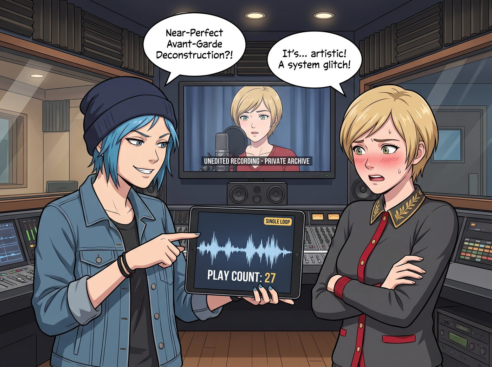
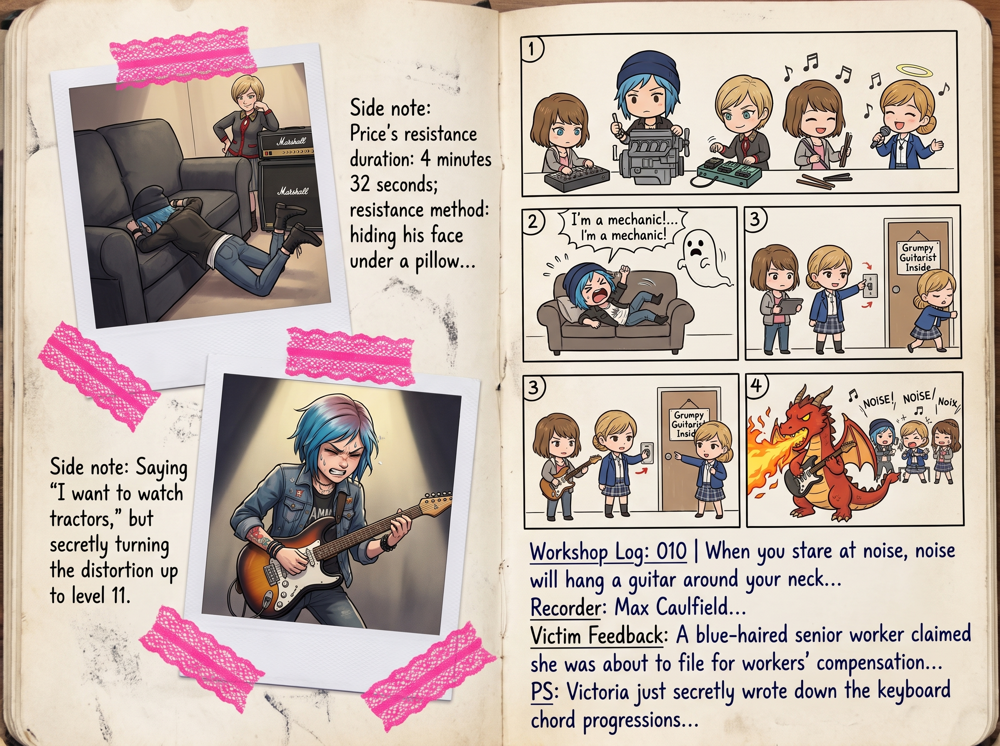

迷途小藍鳥的迴響


那場深夜排練結束後，Victoria 偷偷把那段未修音的狂暴錄音存進了雲端私人珍藏庫，還設了三重密碼。結果沒過幾天，工坊新升級的智能中控系統一次自動流轉播放，把這首「私藏」在全場音響裡公放了出來，當場人贓俱獲。名媛先是死鴨子嘴硬推說是系統漏洞，被 Chloe 抓著播放次數和「單曲循環」標籤拆穿後，也只能梗著脖子改口，用一連串充滿藝術術語的措辭，勉強承認這首歌「達到了近乎完美的先鋒解構高度」。
而這首意外走紅的《Midnight Sky on Fire》，很快又惹出了一場更意想不到的迴響。
一、寄給老朋友的挑釁
Chloe 抱著惡作劇加顯擺的心態，把這首歌的原檔用郵件發給了遠在阿卡迪亞灣的 Blackwell 學院老校警 Samuel，附言寫著：「嘿，Sam，聽聽這個，有沒有比校長室的廣播好聽一萬倍？」
Samuel 坐在他那間堆滿松鼠飼料、舊卡帶和清潔工具的破舊警衛室裡。當他戴上泛黃的老式海綿耳機，點開音頻的瞬間，手裡的溫水杯在空中停頓了整整三秒，那雙平時總是半瞇著、看透一切的眼睛猛地睜大。
Chloe 的第一聲嘶吼進來時，他沒有像普通長輩那樣嫌吵皺眉，反而緩緩靠在椅背上，枯瘦的手指開始跟著鼓點，在滿是木屑的桌板上極其精準地打著八拍，嘴裡喃喃自語：「啊……風暴退去了，但火留在了這群年輕人的骨子裡。」
二、來自老校工的神棍級硬核回信
當天深夜，Chloe 的郵箱彈出了一封來自 Samuel 的長郵件。沒有說教，全是一套混雜著印第安通靈哲學與地下搖滾鑒賞的奇葩評價：
「Chloe，迷途的小藍鳥：
那些在警衛室後院偷吃堅果的松鼠，剛才全被妳吉他裡的靜電嚇得立起了尾巴。但我告訴牠們不用怕，因為這不是雷暴，這是純粹的生命在破殼。
吉他與嘶吼（Chloe）：妳的失真度調得像一輛化油器著火的老皮卡，很吵、很髒，但非常誠實。妳以前眼裡全是刺，現在那些刺變成了能把午夜天空點著的火花。妳找到妳的方向了。
鼓點與打擊（Max）：告訴那個拿相機的小姑娘，她敲油漆桶的力道比她平時走路堅定多了。鼓點裡沒有猶豫，每一記都在告訴這個世界『我就站在這裡，不打算後退』。
合成器（Victoria）：裡面那些冷冰冰的鍵盤琶音……聽起來像一隻高傲的白鷺不得不和三隻野狼一起在泥潭裡狂奔，但牠居然飛得挺好看。這真有意思。
貝斯與和聲（Kate）：像地底深處流動的泉水，把所有暴躁的火焰接住了。如果沒有這個低音，妳們的車廂早就解體了。
總結：比現在市面上那些精緻無聊的流行垃圾好上一千倍。
順便說一句——有個轉音的路子，讓我想起七十年代西雅圖的一支老樂隊。繼續吵下去吧，世界需要這種不肯低頭的噪音。
——Samuel（附言：幫我向那棵在車廂外剛發芽的向日葵問好）」
三、二號車廂的全員反應
讀完這封信，四個人圍在長木桌前集體愣住了。
Chloe 踩著滑板在客廳裡大肆滑行，狂笑著揮舞手機：「看見沒！老娘就說這老頭絕對是個隱藏的朋克老炮！他誇老娘的吉他是著火的老皮卡！！」
Victoria 捏著咖啡杯，咬著牙反覆看那句「白鷺和三隻野狼在泥潭狂奔」，雖然臉色發青，但最後還是忍不住小聲冷哼：「……至少他承認我的琶音很有格調，算這個看門人有點藝術眼光。」
Max 扶著眼鏡，看著郵件裡對自己鼓點的評價，悄悄在手帳的樂隊備忘錄裡畫了一隻戴耳機敲油漆桶的小松鼠。
Kate 雙手捧著茶杯，眉眼彎彎：「Samuel 先生一直都是個能看見大家靈魂的人呢。」
這封來自阿卡迪亞灣舊時光的回信，沒有沉重的回憶，反而像一枚溫暖的印章，正式認可了這支野生樂隊的誕生——那些經歷過風暴的靈魂，終於在自己的噪聲裡，找到了最鏗鏘有力的共鳴。